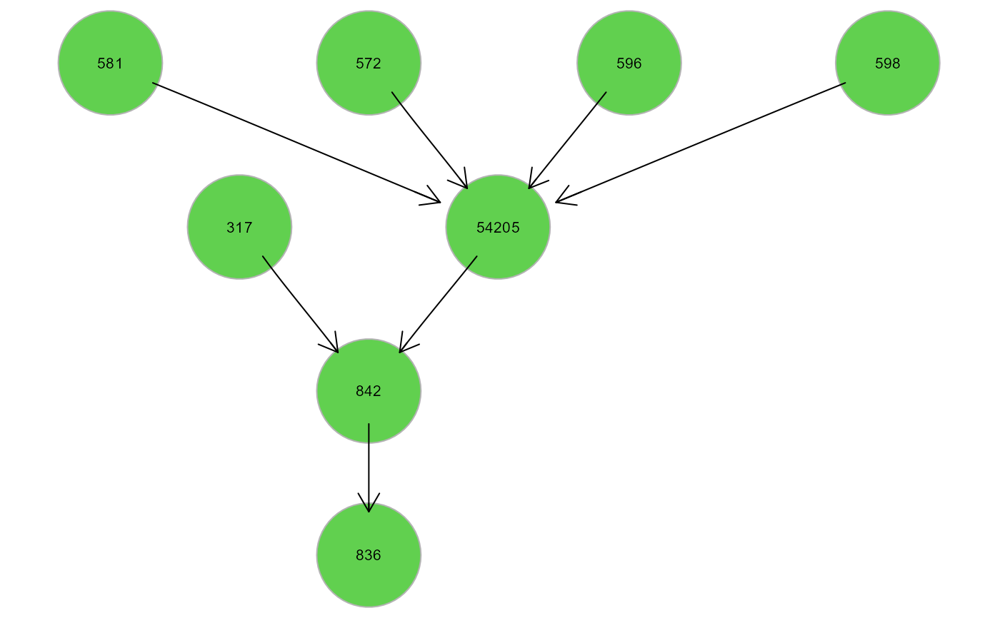

Extract and fit clusters from an input graph.
extractClusters( graph, data, group = NULL, membership = NULL, map = FALSE, verbose = FALSE, ... )
Arguments
| graph | Input network as an igraph object. |
|---|---|
| data | A matrix or data.frame. Rows correspond to subjects, and columns to graph nodes (variables). |
| group | A binary vector. This vector must be as long as the
number of subjects. Each vector element must be 1 for cases and 0
for control subjects. Group specification enables node perturbation
testing. By default, |
| membership | A vector of cluster membership IDs. If NULL, clusters
will be automatically generated with |
| map | Logical value. If TRUE, the plot of the input graph
(coloured by cluster membership) will be generated along with independent
module plots. If the input graph is very large, plotting could be
computationally intensive (by default, |
| verbose | Logical value. If TRUE, a plot will be showed for each cluster. |
| ... | Currently ignored. |
Value
List of clusters as igraph objects and fitting results for each cluster as a lavaan object.
Author
Fernando Palluzzi fernando.palluzzi@gmail.com
Examples
# \dontrun{ # Install data examples, reference networks, and pathways #devtools::install_github("fernandoPalluzzi/SEMdata") library(SEMdata) library(huge) als.npn <- huge.npn(alsData$exprs)#> Conducting the nonparanormal (npn) transformation via shrunkun ECDF....done.#> d-separation test (basis set) of 420 edges ... #> #> Number of significant local tests: 220 / 420 #># Clusters creation clusters <- extractClusters(graph = alsData$graph, data = adjdata)#> modularity = 0.5588502 #> #> Community sizes #> 3 2 1 4 #> 4 8 9 11 #> #> cluster N.nodes N.edges dev_df srmr pv.act pv.inh #> 1 HM1 9 8 1.086 0.061 1 1 #> 2 HM2 8 7 0.826 0.039 1 1 #> 3 HM4 11 25 1.693 0.061 1 1#> lhs op rhs est se z pvalue ci.lower ci.upper #> 1 z10452 ~ z6647 -0.044 0.079 -0.553 0.580 -0.198 0.111 #> 2 z5530 ~ z6647 -0.066 0.079 -0.833 0.405 -0.220 0.089 #> 3 z5532 ~ z6647 -0.017 0.079 -0.218 0.827 -0.172 0.138 #> 4 z5533 ~ z6647 -0.179 0.078 -2.302 0.021 -0.332 -0.027 #> 5 z5534 ~ z6647 -0.066 0.079 -0.838 0.402 -0.221 0.089 #> 6 z5535 ~ z6647 -0.430 0.071 -6.019 0.000 -0.570 -0.290#> lhs op rhs est se z pvalue ci.lower ci.upper #> 1 z54205 ~ z572 -0.140 0.071 -1.962 0.050 -0.280 0.000 #> 2 z54205 ~ z581 -0.247 0.071 -3.463 0.001 -0.387 -0.107 #> 3 z54205 ~ z596 0.119 0.073 1.634 0.102 -0.024 0.261 #> 4 z54205 ~ z598 -0.315 0.073 -4.338 0.000 -0.457 -0.173 #> 5 z836 ~ z842 0.049 0.079 0.620 0.536 -0.106 0.204 #> 6 z842 ~ z317 0.063 0.079 0.798 0.425 -0.092 0.218#> lhs op rhs est se z pvalue ci.lower ci.upper #> 1 z1432 ~ z5606 0.440 0.070 6.257 0.000 0.302 0.578 #> 2 z1432 ~ z5608 -0.110 0.070 -1.560 0.119 -0.248 0.028 #> 3 z4741 ~ z1432 0.106 0.078 1.355 0.175 -0.047 0.258 #> 4 z4741 ~ z5600 -0.115 0.076 -1.509 0.131 -0.264 0.034 #> 5 z4741 ~ z5603 0.140 0.076 1.840 0.066 -0.009 0.289 #> 6 z4741 ~ z5630 0.002 0.076 0.028 0.978 -0.147 0.152# Map cluster on the input graph g <- alsData$graph c <- clusters$clusters$HM2 V(g)$color <- ifelse(V(g)$name %in% V(c)$name, "gold", "white") gplot(g)# }